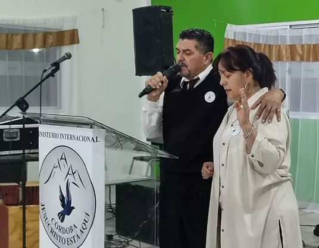
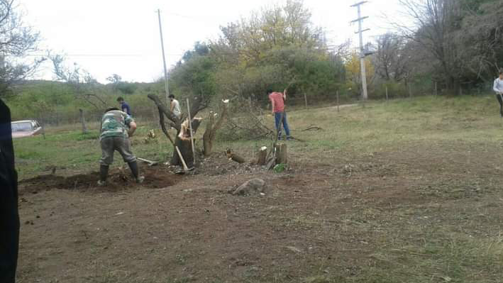
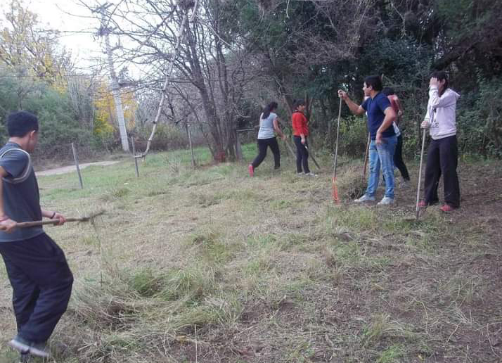
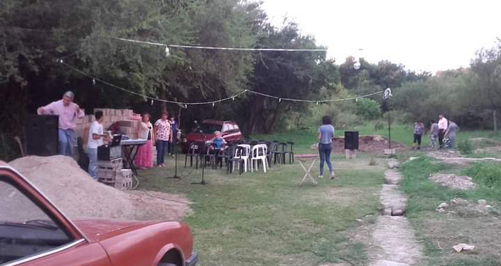
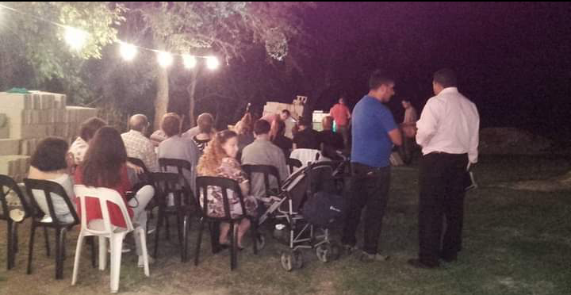
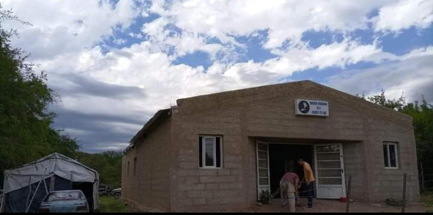
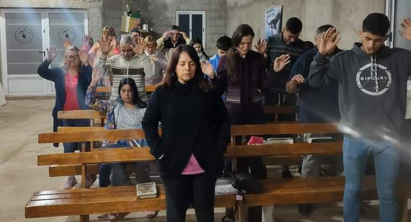
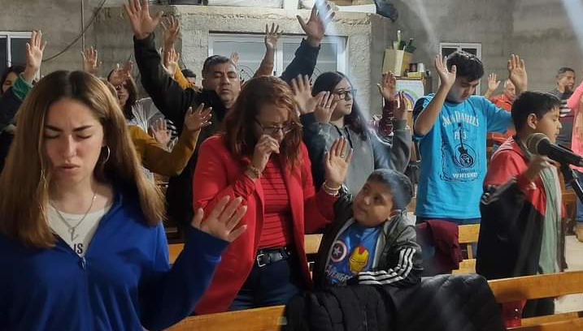
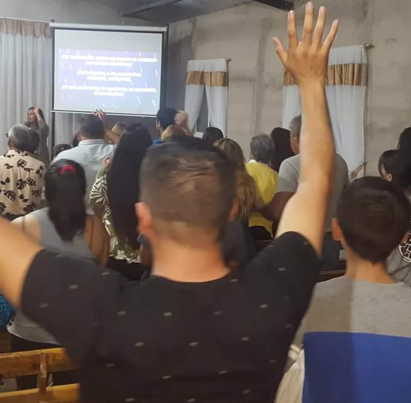
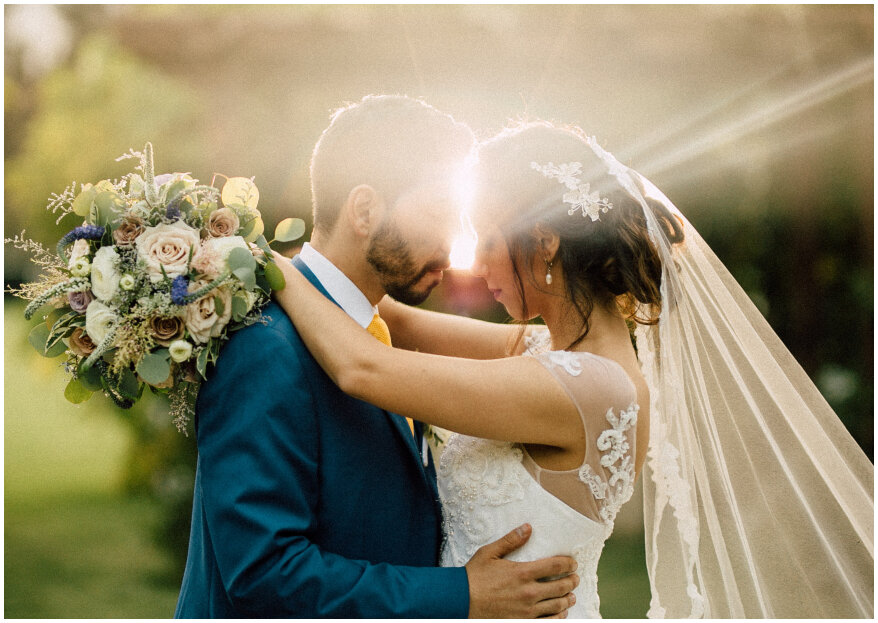

Jesús dijo: "Venid a mí todos los que estáis trabajados y cargados, y yo os haré descansar." Mt 11:28
NUESTRAS REUNIONES
REUNIÓN GENERAL:
Cura Gaucho, Yacanto , Córdoba.
Domingo 19hs
ANEXO:
Miguel Cané 149, B° Parque, Villa Dolores, Córdoba.
Sabado 20:30hs

Pastores Marcelo Aguirre y Sandra Tello de Aguirre
Queremos darte la bienvenida a esta gran familia.
Tenemos un Padre maravilloso que nos ama con
amor eterno. A través de Jesús somos sanados,
restaurados y liberados.
Si Jesús esta en la barca de tu vida, las grandes
tormentas no te ahogarán.
Deseamos de todo corazón, que seas bendecido, que
seas alineado a la voluntad del Padre.
Desde hace 17 años Dios nos llamó a pastorear y llevar
la palabra de Dios a muchas familias, y hemos visto
el poder de Dios trayendo salvación,liberación y sanidades.
El poder de Dios se a manifestado de una manera gloriosa
trayendo restauración a las familias.
comenzamos en el comedor de una casa de una familia, y al
pasar el tiempo, tuvimos que alquilar un lugar mas grande
porque el Señor añadia los que eran salvos.
Hasta que llegó el día en el que Dios proveyó un lugar, donde hoy con la ayuda del Señor
ya tenemos edificado.
Cuando pisamos por primera vez ese terreno, trabajamos
muy duro, y comensamos a hacer las reuniones debajo de
un tala, mientras ibamos limpiando el terreno de la maleza
que habia.
Al pasar el tiempo, construimos una carpa.
Pasamos frio, calor , la inclemencias del clima,pero
sabiamos que el Señor estaba obrando e iba a completar
lo q habia comenzado, y asi el Señor fue añadiendo todo
lo que se necesitaba para la construccion del templo.
Codo a codo trabajando con los hermanos, y muchas veces
se encontraron los pastores trabajando solos, pero su fe
se mantuvo fuerte.
Asi nuestro pastores caminaron con Dios, amando la obra
llevando la palabra sin importar si habia solo un hermano
o si habia un lugar comodo, solo querian formar a Cristo
en los hermanos.
Hoy tenemos un grupo que llevamos la palabra a todas las
familia, y seguimos creciendo, porque la gloria postrera
sera mayor que la primera








VARONES
Dios quiere formar hombres esforzados y valientes, con el
caracter Jesús, que sepan expresar la voluntad del Padre.
Hombres capacitados para toda buena obra.
En las celulas para varones, con la gracia del Señor
somos entrenados para vivir y manifestar el Reino de Dios
en la tierra.
Dios esta trabajando en los hombres a traves de diferentes
células, trayendo sanidad, restauracion y liberación.
Que bueno es nuestro Señor!, que esta obrando integralmente
y asi somos preparados, para expandir el reino y recibir el
regreso de Jesús, para que cuando Él vuelva nos encuentre
velando con aceite en nuestras lamparas.
MUJERES
¿Has conocido una de esas mujeres que parecen brillar con una luz especial? Que cuando llegan a un lugar imparten paz, gozo . No hablamos de belleza exterior, maquillaje o ropa lujosa. Tampoco hablamos de sonrisas forzadas y practicadas. Se trata de esa belleza que refleja la paz de un corazón perdonado y enamorado del Padre celestial.
La Biblia nos anima a que, como mujeres, reflejemos el carácter de Cristo. Esto trae alegría al corazón de nuestro Padre celestial. ¿Cómo lo hacemos? ¿Qué distingue a una mujer que ama a Dios? , El Señor a traves de las celulas nos va instruyendo, nos capacita para estar preparadas para toda buena obra.
ADOLESCENTES
Los años de la juventud son un buen tiempo para desarrollar una relación con Dios. Está en la Biblia, Eclesiastés 12:1, "Acuérdate de tu Creador en los días de tu juventud, antes que vengan los días malos, y lleguen los años de los cuales digas: No tengo en ellos contentamiento".
La adolescencia es una etapa difícil, es una transición de la niñez a la adultes, donde deben adquieren una identidad en Dios, y no en lo que el sistema del mumdo, sea la moda, la cultura etc. les ofrece.
Jesús tambien paso por la adolescencia, y nos entiende, comprende toda la revolución que hay en nuestro interior en esta etapa.
El Señor, a través de su palabra nos ayuda a encontrar identidad en él.
MATRIMONIO
El matrimonio es un diseño de Dios, que nació
en su corazón, su voluntad es formar hogares
donde él pueda habitar, y su voluntad es buena
agradable y perfecta.
Y dejará el hombre a su padre y madre y se
unirá a su mujer y serán una sola carne.
El matrimonio es un pacto de amor, de respeto,
de honra, compromiso, donde ambos viven para edificar el hogar sobre la roca que es Jesús. Jesús es el fundamento mas estable y firme que una familia puede tener.
Cordón de tres dobleses no se rompe...
Dios a restaurado miles de matrimonios, volviendo a ensender la llama que se habia apagado. Satanas vino para matar hurtar y destruir , pero Jesús vino para traer vida y vida en abundancia.
Que bueno es Dios!, él esta dispuesto y tiene todo el poder para transformar el hogar en un pedacito de cielo en la tierra. Con Jesús el matrimonio es para siempre. Cnt 8:7: "Las muchas aguas no podrán apagar el amor..."

La Biblia es el manual que nos muestra cual es el diseño original, en ella está todo lo que necesitamos para ser funcionales, nos enseña como respetarnos , como es el amor genuino, el orden financiero, la sexualidad, etc. La palabra de Dios nos ayuda a que nuestro matrimonio sea integralmente saludable, que refleje la imagen de Jesús y el Padre sea glorificado.
LA NIÑEZ
Los niños son de un gran valor para Dios y hay muchos versículos sobre cómo los niños son una gran bendición. La historia en la que Jesús recibe a los niños se repite varias veces en la Biblia.
Debemos seguir el ejemplo de Jesús para mostrar a cada niño que valor que tiene a nuestros ojos y a los ojos de Dios.
Mateo 19:13-14:
«Entonces le fueron presentados unos niños, para que pusiese las manos sobre ellos, y orase; y los discípulos les reprendieron. Pero Jesús dijo: “Dejad a los niños venir a mí, y no se lo impidáis; porque de los tales es el reino de los cielos”».
Salmos 127:3-5:
«He aquí, herencia de Jehová son los hijos; cosa de estima el fruto del vientre. Como saetas en mano del valiente, así son los hijos habidos en la juventud. Bienaventurado el hombre que llenó su aljaba de ellos; no será avergonzado. Cuando hablare con los enemigos en la puerta».
Los niños no son el futuro de la iglesia, son el presente, ellos aportan al cuerpo de cristo una gracia y un ejemplo para imitar en cuanto a su sencibilidad y dependencia.